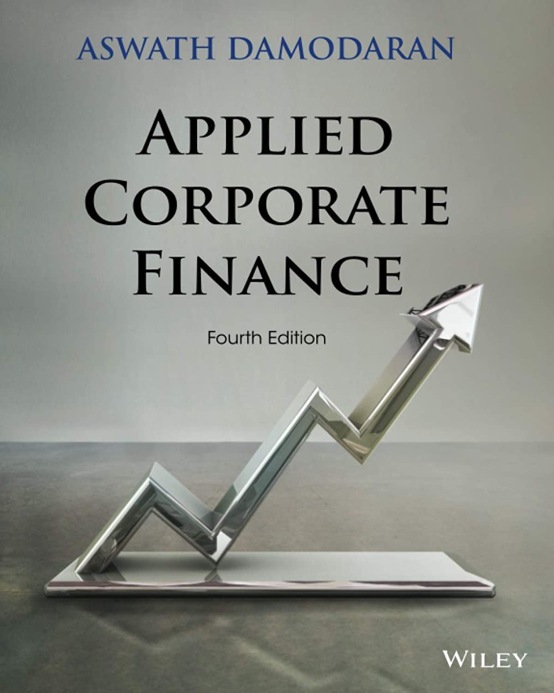

阿斯瓦斯·达摩达兰（Aswath Damodaran）自1986年进入纽约大学斯特恩商学院任教，被华尔街和一代MBA学生称作"估值院长"（Dean of Valuation）。他多年坚持把公司财务、估值、投资哲学三门课的讲义、电子表格乃至上课录像全部免费放上个人网站，任何人都能下载。《应用公司财务》正是他公司财务课的教材，早期版本的副标题"A User's Manual"（用户手册）道出了全书立场：公司财务不该被拆成互不相干的公式和章节，而是一门有统一逻辑、可以直接上手的学问。
达摩达兰把企业的所有决策归结为三类。投资决策解决"把钱投到哪里"——一个项目的回报能否越过由风险决定的"门槛率"（hurdle rate）；融资决策解决"用什么钱"——债务与股本各占多少才是最优资本结构；股利决策解决"赚到的现金怎么办"——是留存再投资，还是以分红或回购还给股东。三类决策背后只有一个目标：让企业价值最大化。真正让这本书区别于普通教科书的，是它的"陪伴式"案例。达摩达兰不用彼此孤立的假想例子，而是挑几家真实公司，让它们从第一章一路贯穿到最后一章。第4版选了六家刻意横跨类型与地域的公司：美国大型上市公司迪士尼、巴西矿业巨头淡水河谷（Vale）、印度家族集团旗下的塔塔汽车、中国科技公司百度、金融机构德意志银行，还有一家叫Bookscape的纽约独立书店——一门私人小生意。同一套估值与决策工具，在这六家性质迥异的公司身上分别演算一遍，读者由此看到方法如何随情境调整。
全书1999年由Wiley首次出版，至今已多次改版，案例公司从早期的五家扩充到第4版的六家，内容也随市场更新——比如把新兴市场公司、家族控股集团这些教科书常回避的情形正面纳入。达摩达兰反复强调资本回报率与资本成本的比较：一家公司只有在投资回报超过资本成本时才创造价值，否则增长越快、毁灭价值越多。这个朴素判断是他全部估值工作的地基。
对投资者而言，这本书的用处在于把"读财报"升级成"读决策"。一家公司选择加杠杆还是回购、把利润留下还是分掉、进入哪些项目，都是可被追问的选择，而不是既定事实。达摩达兰教的正是如何站在管理层的位置，判断这些选择究竟在为股东创造还是消耗价值。他从不给出"买入"标签，只给出一套能自己动手算下去的框架——这也是为什么这本书在从业者中被反复翻阅，而不只是躺在考试书单上。